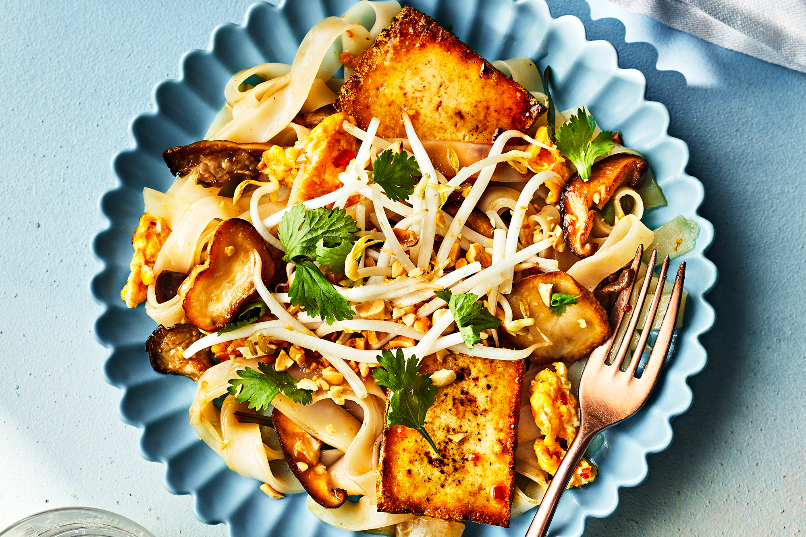

Tofu Pad Thai
Home Page

Description
Pad Thai, also called kway teow pad Thai (meaning "Thai-style stir-fried rice noodles"), is customized in endless ways by street food vendors, restaurateurs, and home cooks all over the world. But at the heart of this beloved Thai noodle dish is
a delectably sweet, salty, and sour sauce that's seasoned with fish sauce, sugar, tamarind, and lime juice. Lara Lee's meatless pad thai heroes hearty, savory fresh oyster and shiitake mushrooms, which suffuse the dish with earthy flavor and
combine beautifully with chewy noodles, golden-fried tofu, fresh, crisp bean sprouts, lightly spicy long red chiles, and crunchy peanuts. Tamarind sits firmly at this pad thai's center, balancing the dish and holding it all together with its
delightfully sour high note. When you prepare the dish, be sure to wash and dry the skillet after browning the mushrooms to prevent the fond from burning while cooking the tofu and peanuts. To make it vegetarian, use a vegan fish sauce, such as
Ocean's Halo, and swap mushroom sauce for the oyster sauce.
Ingredients
Sauce:
- 1/4 cup superfine sugar
- 2 tablespoons fish sauce
- 2 tablespoons oyster sauce
- 2 tablespoons Tamarind Water (see Note)
- 4 teaspoons fresh lime juice (from 1 lime)
- 1 fresh long red chile (about 3/8 ounce), finely chopped (about 1 tablespoon)
- 1 medium garlic clove, finely chopped (about 1 teaspoon)
Pad Thai:
- 5 ounces uncooked rice noodles (about 1/3 inch wide)
- 5 tablespoons neutral cooking oil (such as canola oil), divided
- 6 ounces mixed fresh mushrooms (such as king oyster, thinly sliced crosswise into 1/4-inch pieces; shiitake caps, sliced into 1/3-inch pieces; or oyster mushrooms, torn if large)
- 3/4 teaspoon fine sea salt, divided, plus more to taste
- 6 (2 1/2- x 1 3/4- x 1/4-inch) firm tofu slices (from about 3 ounces tofu, drained and patted dry)
- 2 tablespoons peanuts, chopped
- 2 large eggs, beaten
- 4 medium-sizes fresh Chinese chives or 1 scallion, cut crosswise into 1-inch pieces
- 1 cup fresh bean sprouts, divided
- 1/4 cup loosely packed fresh cilantro leaves and stems
Steps
Make the sauce:
- Stir together superfine sugar, fish sauce, oyster sauce, tamarind water, lime juice, chile, and garlic in a small bowl. Set aside.
Make the pad thai:
- Soak noodles in boiling water according to package directions. Drain. Transfer to a medium bowl. Add 1 tablespoon oil, and toss to coat. Set aside.
- Heat 1 tablespoon oil in a large stainless steel skillet over high. Add mushrooms and 1/2 teaspoon salt; cook, stirring occasionally, until mushrooms are tender and golden brown, 3 to 5 minutes. Transfer to a small bowl; set aside. Wash and
dry skillet.
- Return skillet to heat over medium-high, and add 2 tablespoons oil. Add tofu slices to hot oil in a single layer; sprinkle evenly with 1/8 teaspoon salt. Cook, undisturbed, until golden on bottom, 1 minute and 30 seconds to 2 minutes.
Carefully flip using a thin metal spatula. Sprinkle evenly with remaining 1/8 teaspoon salt. Cook until golden brown on other side, 1 minute and 30 seconds to 2 minutes. Transfer to a plate lined with paper towels. Set aside. Wipe skillet
clean.
- Return skillet to heat over medium-low, and add 1 1/2 teaspoons oil. Add peanuts, and sprinkle with salt to taste. Cook, stirring constantly, until peanuts are fragrant and toasted, 1 to 2 minutes. Transfer to a mortar, and coarsely grind
using a pestle. (Alternatively, transfer to a cutting board, and finely chop.) Set peanuts aside, and wipe skillet clean.
- Return skillet to heat over high, and add remaining 1 1/2 teaspoons oil. Add eggs; cook, undisturbed, until bubbly and mostly set, about 15 seconds. Scramble eggs, and break into large pieces; push scrambled eggs to back edge of skillet. Add
Chinese chives and 2/3 cup bean sprouts to center of skillet. Cook, stirring constantly, until softened, about 30 seconds. Add noodles and half of the sauce (about 1/4 cup). Cook, stirring constantly, until ingredients in skillet are well
incorporated and noodles have separated into individual strands, about 30 seconds. Stir in cooked mushrooms, tofu, and remaining sauce (about 1/4 cup). Cook, stirring constantly, until well combined and noodles are shiny and well coated, about
20 seconds. Immediately divide noodle mixture between 2 bowls. Top evenly with ground peanuts, cilantro, and remaining 1/3 cup bean sprouts.
Note